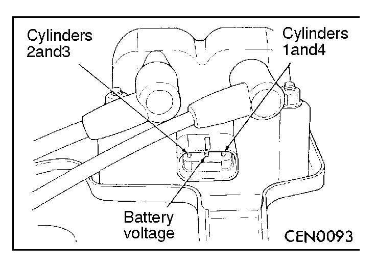
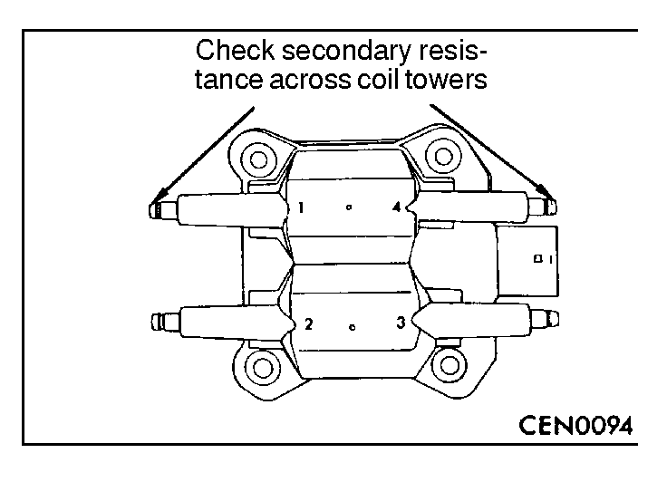

![[Previous]](https://mitsubishitechinfo.com/data/F24S/BUTTONS/fprevg.png)
![[Next]](https://mitsubishitechinfo.com/data/F24S/BUTTONS/fnextg.png)
 
IGNITION COIL PACK CHECK
Coil one fires cylinders 1 and 4. Coil two fires cylinders 2 and 3. Each coil tower is labeled with the number of the corresponding cylinder.
Primary Coil Resistance
(1)Disconnect the electrical connector from the coil pack.
(2)Measure the primary resistance of each coil. At the coil, connect an ohmmeter between the B+ pin and the pin corresponding to the cylinders in question.
Standard value: 0.51 - 0.61 Ω
(3)Replace the coil pack if resistance is not within the standard value.
Secondary Coil Resistance
(1)Remove spark plug cables from the secondary towers of the coil.
(2)Measure the secondary resistance of the coil between the towers of each individual coil.
Standard value: 11.5 - 13.5 kΩ
(3)Replace the coil pack if resistance is not within the standard value.